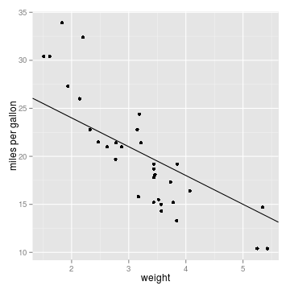

Linear Regression Explorer
An Interactive Application to Develop Your Intuition of Linear Regression
Uwe Neuhaus
Data Wrangler
The Aim
Selecting the Variables
- Different variables from the mtcars data set can be selected for the x- and y-axis.
- The x-axis can be scaled (logarithmic, squared, cubed).

Try to Manually Fit the Line
- The aim is to fit a regression line manually by interactively choosing the intersect and slope.
- To evaluate the selected values, the residual standard error is calculated and displayed.
 Residual Standard Error: 5.4402930
Compare with True Regression Line
- You can compare your own estimate with the true linear regressionn line.
- The minimal residual standard error and R-sqared can be displayed if desired.
Residual standard error: 5.4402930
Minimal residual standard error: 3.1340226
R-squared: 0.4594304